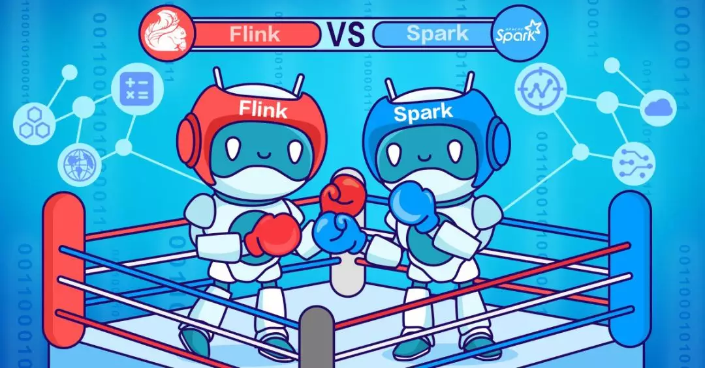
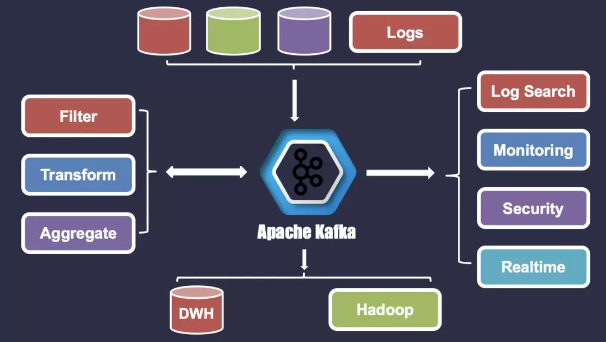

Kafka-
Eagle
Home
Documentation
Blog
Articles
About
Need some help? Let us know!
kafka.eagle@gmail.com
哥不是小萝莉 QR
基于 Kafka 的实时计算引擎如何选择？Spark or Flink ？
Posted on Jun 3, 2019

Kafka应用实践与生态集成
Posted on May 27, 2019
